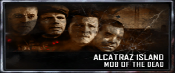

Origins

Mob of the Dead
Shadows of Evil


September 3rd, 5AD - The Apothicans from the Dark Aether Dimension send Element 115 to Earth. Their hope is that the Element will one day cause war in the dimension, making a bridge between the Earth and the Dark Aether.
January 15th, 1292 - On 115 day a great war between humanity and the Apothicans begins. Among the humans are Primis, Sir Pablo, the Wolf King, Keepers, and many other men. Among the Apothicans is their leader, the Shadowman, Margwas, Parasites, Tentacles, Corrupted Keeprs, and many other Apothicans.
April 14th, 1294 - Sir Pablo Marinus is freed from a Margwa by four unknown heros wielding four staves. These four would become known as Primis
Decemeber 31st, 1299 - Humanity and the Keepers togther defeat the Apothicans, ending The Great War. The apothicans hide an Aether Pyramid on the moon and are banished to the dark aether, eventually also evolving into Apothicans. The remaining keepers become guardians. In all The Great War lasted seven years, eleven months, and seventeen days.
January 1st, 1300 - Primis instruct the Wolf King to build the castle of Der Eisendrache. Primis then disappear from history.
February 18th, 1300 - Pablo begins his documentation of the great war, he includes all he has learned of the Keepers, Apothicans, and Element 115. He notes that a site in Nothern France cantains a massive diposit of 115.
June 4th, 1300 - A tomb is contructed in Nothern France to celebrate fallen soldiers of The Great War. Statues of Primis are built, meant to symbolize the hope that if one day another great evil falls upon mankind, they may return.
July 17th, 1898 - Richtofen's parents die.
February 20th, 1905 - Takeo Masaki fights in the battle of Mukden.
August 11th, 1906 - Richtofen begins his studies at Heidelberg University under the tutelage of Doctor Ludvig Maxis. Having lost his parents, Richtofen comes to view him as a father figure.
July 3rd, 1912 - Richtofen and Maxis join Group 935.
June 4th, 1914 - Richtofen is visited by his future self. He states "you will need this blood. When the time comes, it will protect you." before his steps back into a rift.
January 5th, 1915 - Maxis invents the Mauser Prototype.
August 28th, 1916 - The Journal of Sir Pablo Marinus, knight of the Great War, is discovered by Group 935.
March 23rd, 1917 - Group 935 begins work a dig site in Northern France after reading Pablo's Journal. They disover a series of underground tombs.
April 21st, 1917 - Group 935 discover the entrance to the tomb's main chamber. They struggle to gain access.
May 11th, 1917 - Unable to access the chamber, soldiers listen to a gramaphone to get rid of frustration. They listen to "La Source Noire" and the door of the main chamber suddenly opens. The camp's exposure to 115 begins.
May 21st, 1917 - Maxis draws schematics for the recreation of the four elemental staves using Pablo's journal and the tomb's main chamber. He instructs Richtofen to begin their construction.
May 29th, 1917 - Maxis reads more of the Great War and begins to question his understanding of the scientific world. He finds himself more open to the possibility of a higher power.
June 11th, 1917 - During expirimentation with 115, 935 create portals made of localized 115. Maxis speculates that the rifts may have created rifts in space and time. The rift allows Samantha to reach out from the Original Dimension. She begs for help, eventually revealing to Maxis that she is his daughter.
June 15th, 1917 - An "ancient box" with the power to manifest weapons from different eras arrives through a portal. Maxis fears that 115 is distrupting the time space continuum.
July 1st, 1917 - 115 power generators a installed, and ancient figures begin emerging from the ground corresponding with the mysterious death of some Group 935 soldiers. The undead figures are fighters from the Great War.
August 3rd, 1917 - Nikolai Belinski is sent into exile.
September 10th, 1917 - Using 115, 935 develops giant robots named Freya, Odin, and Thor. 935 belives they will secure victory for the central powers.
September 22nd, 1917 - Richtofen notes that inspite Group 935's progress at the dig site, he is troubled by Maxis' growing obsession with Pablo's journal.
October 6th, 1917 - Takeo Masaki is dispatched to France by the Emperor to gather intel on group 935's weapon technology.
November 19th, 1917 - Tank Dempsey is deployed in Nothern France to assess group 935 after reports of "prototype armored weaponry... strange lights in the sky... a mysterious plague... and even giant metal men."
December 10th, 1917 - Exiled in Europe, Nikolai recieves new orders from the Imperial Russian Army to investigate the enemy "War Machine." Nikolai, still loyal to Russia willing obeys.
February 23rd, 1918 - Nikolai writes about the civil war going on in Russia. Nikolai enjoys his time in France, but does not expect peace to last long.
March 2nd, 1918 - Takeo begins having dark nightmares. When Takeo learns that the Emperor wants to discuss a "matter of great importance," he writes that he feels a "growing sense of dread.
April 14th, 1918 - Despite ongoing battles, Dempsey fares well in Northern France. In a personal letter, he reveals that both the Japanese and Russian Armies have also sent spies to investigate the activities of Group 935.
May 1st, 1918 - Maxis is obsessed with the voice of Sam, who he now speaks to constantly. He believes she is "the key to everything."
May 12th, 1918 - Richtofen reports Maxis' behavior to the Group 935 senior staff. Richtofen believes Maxis is affected by 115.
May 13th, 1918 - Richtofen reads Pablo's journal and learns that Northern France is possibly the largest deposit of 115 in the world. He thinks this explains those affected by the site.
May 14th, 1918 - Maxis is fully consumed by Samantha's voice, he swears he will no longer serve 935's mission.
June 4th, 1918, ORIGINS - Elememt 115 finally reanimates the dead Great War soldiers and they quickly overtake the facility. Maxis becomes catatonic due to prolonged exposure to the element and Richtofen removes his brain before he turns. Richtofen, Dempsey, Nikolai, and Takeo meet and help free Samantha from her imprisonment in Agartha, and Sam returns the favor by sending them to their next destination. Maxis' brain arrives in Agartha, Monty brings it to the house and wipes the Maxis corrupted by the Dark Aether.
July 18th, 1922 - Salvatore DeLuca begins the DeLuca crime family by opening gambling houses across Chicago.
February 17th, 1923 - Billy Handsome joins the DeLuca crime family as a hitman. Sal will look at Billy like the son he never had.
September 18th, 1923 - Michael "Finn" O'leary joins the family, he's known for gambling and rigging games.
March 23rd, 1924 - Finn marries Angelina Bow, an aspiring starlet ith delusions of granduer.
March 1st, 1929 - Sal writes about his frustration with "Chicago's Finest". After years of bribes with the city he comes to realize that it is no longer a viable option.
May 11th, 1930 - Sal begins his work with Albert Arlington (Al), he is an associate in LA known for being a "matter schemer and bank robber"
October 14th, 1930 - Finn informs his lawyer that he will not accept a divorce from Angela, saying "she can leave this marriage the day she leaves this Earth"
October 11th, 1931 - Al wakes up in the hospital after a LA heist for Sal goes wrong.
October 28th, 1931 - While in the hospital Al submits his comic strip, "learus from Mars" for publication, it's his third attempt. He is denied again.
November 11th, 1931 - Angry and frustrated with his collapsing empire, Sal kills a prositiute. No longer willing to turn a blind eye, the Chicago Police Department arrests him.
December 1st, 1931 - Billy is arrested for multiple homicides in an operation against the Deluca Family.
December 19th, 1931 - Finn is arrested in an operation against the Deluca Crime Family when his wife offers evidence against him.
January 19th, 1932 - Al is arrested for his part in the LA heist.
May 14th, 1932 - After being found guilty of murder, Sal is sentenced to life in Alcatraz prison.
May 16th, 1932 - After being found guilty of 116 counts of murder Billy is sentenced to life in Alcatraz prison.
May 30th, 1932 - After being found guilty of 16 counts of gambling fraud Finn is sentenced to life in Alcatraz prison.
June 13th, 1932 - Sal and Billy arrive at the island.
June 30th, 1932 - Finn arrives at the island.
July 1st, 1932 - Al is found guilty of grand larceny, grand theft auto, arson, conspiracy, and battery. He will serve life in prison at Alcatraz.
August 3rd, 1932 - Al arrives at the island.
January 1st, 1933 - Stanley Ferguson begins working at Alcatraz.
April 1st, 1933 - Al convinces Sal, Finn, and Billy that they can build a plane and fly out of Alcatraz.
December 2nd, 1933 - Sal, Finn, and Billy plot to get revenge on Al after realizing the plane will never be complete.
December 31st, 1933 - Sal, Finn, and Billy lure Al to the rood and kill him.
January 11th, 1934 - Stepping through a rift Primis Richtofen secures blood samples from Sal and Finn.
January 19th, 1934 - Found guilty of Al's murder, Sal, Finn, and Billy are execcuted by eletric chair.
MOB OF THE DEAD - Al, Billy, Sal, and Finn find them selves in a seeminly endless cycle of trying to escape from Alcatraz and fighting the undead.
April 16th, 1940 - Richtofen arrives in Dimension 63, he contacts members of the Illuminati to help him build a laboratory underneath Alcatraz.
April 18th, 1940 - Richtofen meets with Stanley Ferguson (a guard at Alcatraz) and convinces him to assist with the construction of the laboratory.
July 3rd, 1941 - Stanley Ferguson reports to Richtofen that the lab has finsihed construction. He states that the subjects will be placed in the statis chambers upon arivial.
July 4th, 1941 - Vicis arrive from Zero Earth and give the Kronorium to Richtofen, reading the book he learns of many timelines, and of many of his other selves who all met their doom, he signs the page "I know what I must do - E.R. 4/7/41." Richtofen asks Victis if they want to go with him or if they want their journey to end, he leaves them to ponder the question as he travels to Zero Earth. At Zero Earth he collects four Victis blood vials from Post Buried Zombie Ultimus Richtofen. Richtofen then goes back to Alcatraz, where he gets four blood vials from the Infirmary, one from Al, Billy, Finn, and Sal. He then travels back to before Origins and gives the blood of Sal and Finn to his past self. Having done this he arrives back with Victis, who say they will go with Richtofen. He puts them on ice for later. Primis arrive from the Proditone Fracture after just saving Takeos soul. Richtofen gives them six vials, two from Al and Billy, and one from each Victis member. Each Primis member now holding two vials travels to the Agonia Fracture. Richtofen learns the location of the summoning key and travels to his next location.
October 1st, 1942 - Stanley Ferguson leaves his job at Alcatraz.
October 21st, 1943 - Posing as Mr. Rapt the Shadowman hires the Reporter to recover artifacts from the South Pacific and Russia.
December 14th, 1943 - The reporter recovers the artifacts from the South Pacific and Russia, among them is the Summononing Key.
December 25th, 1943 - As per Mr. Rapt's request the reporter speaks to Stanley Ferguson, a retired guard from Alcatraz. Stanley gives a detailed account of the deaths of Al, Billy, Finn, and Sal.
December 31st, 1943 - At Mr. Rapt's request the reporter arrives in Morg City to take in the sights, sounds and smells.
January 15th, 1944 - On 115 day meteor showers begin to rain over Morg City
January 30th, 1944 - The reporter notes strange mold appearing all over the city. He notes people are getting ill and acting delirious.
February 13th, 1944 - A fruit vender tells the reporter about the ancient order of the keeper, and how they're the only ones holding back the forces of the apocalypse. He talks to the people hearing chanting... from beneath the city.
March 30th, 1944 - The reporter sends Mr. Rapt a telegram providing details and contact information for Nero, Jessica Rose, Floyd Campbell, and Jack Vincent.
April 5th, 1944 - Aware of the Shadowman's actions, Monty writes to the reporter, warning him to not give the summoning key to anyone.
April 10th, 1944 - Jessica Rose learns a photographer is in possesion of compromising images of her.
April 20th, 1944 - Pretending to be a company executive, the Shadowman tells Nero's Lawyer that Nero's wife has taken out substantial loans in his name, Nero has 15 days to settle the debts before the company seeks reparation. Facing multiple debts due to his wife's spending habits, Nero decides to kill her and get life insurance to pay off the debt. Masquerading as an Interal Affairs officer, the Shadowman tries to convince Jack Vincent's partner to admit that Jack plots to kill the snitch who could provide evidence against him. Later, pretending to be a film director, the Shadowman tricks Jessica into thinking he's interested in hiring her for a leading role. He tells her producer the part is hers. Afraid that the photographer could jeopardize her chance at stardom, she asks him to meet her, so they can "sort stuff out." The Shadowman then poses as a Journalist and suggests Floyd is a "journeyman fighter" to Floyd's Promoter. Wanting to quarntee his shot at the title, Floyd decides to wear brass knuckles under his gloves for his fight with Tony King.
April 21st, 1944 - Nero misses a call from his lawyer, informing him the documents were forged and there is nothing to worry about. Jack misses a call from his partner he has his back with interal affairs and has nothing to worry about. Floyd misses a call from his promoter that the fight was a success and that he has a shot at the title. Jessica misses a call from her producer. He says he didn't have a good feeling about the director and it didn't work out. However he scored her a lead in a musical he and his partner are financing. Jessica kills the photographer and secures the incriminating photographs. Jack kills the snitch who could turn him over to International Affiars. Floyd kills Tony the King in the boxing match and cashes in on his winnings. Nero kills his wife in a "work accident", cashing in her life insurance policy to square away the debts. Richtofen arrives in Morg City to secure the Summoning Key.
April 22nd, 1944 - Richtofen learns the reporter has the Summoning Key and confronts him. The reporter waves Monty's letter at Richtofen and orders him to stay away before attacking him. Richtofen kills the reporter in self defense.
April 25th, 1944, SHADOWS OF EVIL - Nero, Jack, Floyd, and Jessica are knocked unconscious at the Black Lace Burlesque Club. They wake up to find themselves in a twisted version of Morg City, shifted slightly from reality. Told they can atone for their sins by the Shadowman, all four are tricked into performing rituals. Jessica sacrifices her producer, Jack sacrifices his partner, Floyd sacrifices his promoter, and Nero sacrifices his lawyer. Completing the rituals, the apothicans are given access to Dimension 63. Realizing they've been duped, the four work with the Keepers to defeat the Shadowman. They trap him into the Summoning Key, bit before they can hand it over to the Keepers, Primis Richtofen arrives and steals the key. Richtofen travels to Dimension 2210 to secure an innocent Richtofen soul. He delivers it to The House. From within the Summoning Key the Shadowman states, "I'll be seeing you..."
April 26th, 1944 - The Apothicans destroy Dimension 63.